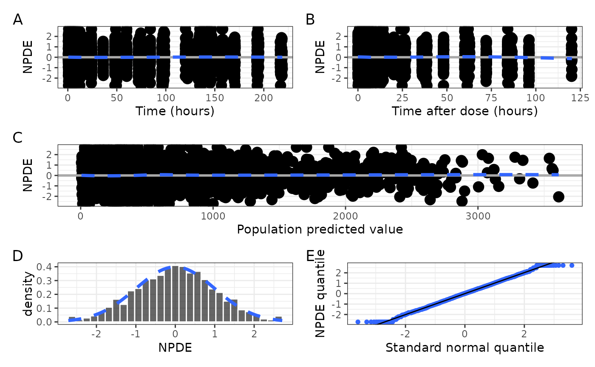
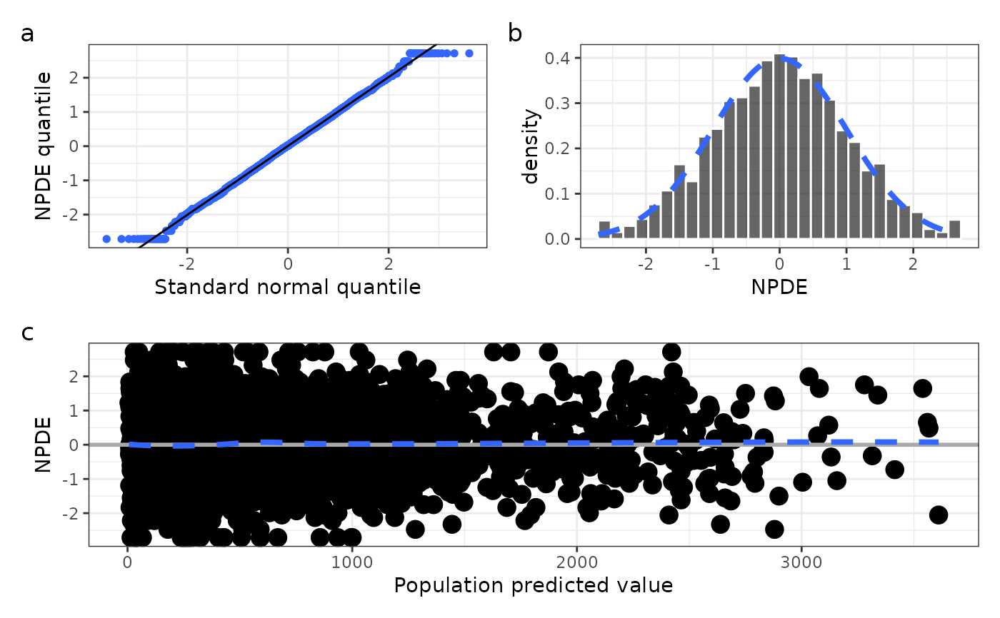

Get a single graphic of basic NPDE diagnostics (npde_panel()) or get the
component plots in a list that can be arranged by the user
(npde_panel_list()) . See npde_covariate() for plotting NPDE versus
covariates.
npde_panel(
df,
xname = "value",
unit_time = "hours",
unit_tad = "hours",
xby_time = NULL,
xby_tad = NULL,
tag_levels = NULL
)
npde_panel_list(
df,
xname = "value",
unit_time = "hours",
unit_tad = "hours",
xby_time = NULL,
xby_tad = NULL
)a data frame to plot.
passed to npde_pred().
passed to npde_tad() as xunit.
passed to npde_time() as xunit.
passed to npde_time() as xby.
passed to npde_tad() as xby.
passed to patchwork::plot_annotation().
npde_panel() returns a single graphic as a patchwork object with the
following panels:
NPDE versus TIME via npde_time()
NPDE versus TAD via npde_tad()
NPDE versus PRED via npde_pred()
NPDE histogram via npde_hist()
NPDE quantile-quantile plot via npde_q()
npde_panel_list() returns a list of the individual plots that are
incorporated into the npde_panel() output. Each element of the list
is named for the plot in that position: time, tad, pred, hist
q. See Examples for how you can work with that list.
data <- pmplots_data_obs()
npde_panel(data, tag_levels = "A")
#> `geom_smooth()` using formula = 'y ~ x'
#> `geom_smooth()` using formula = 'y ~ x'
#> `geom_smooth()` using formula = 'y ~ x'
#> `stat_bin()` using `bins = 30`. Pick better value with `binwidth`.

l <- npde_panel_list(data)
names(l)
#> [1] "time" "tad" "hist" "q" "pred"
with(l, (q+hist) / pred, tag_levels = "a")
#> `stat_bin()` using `bins = 30`. Pick better value with `binwidth`.
#> `geom_smooth()` using formula = 'y ~ x'
